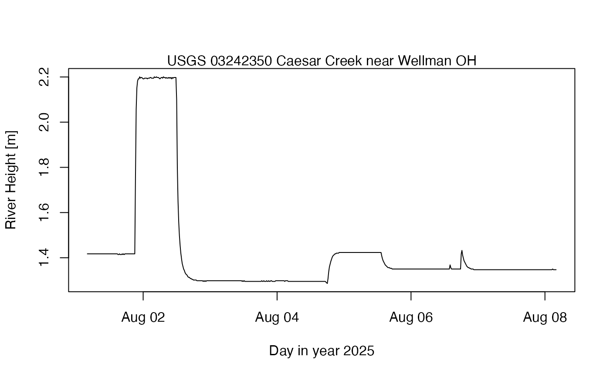

Download American river-gauge data from USGS
Arguments
- id
character value giving the numeric code for the gauge. This defaults to a river in Ohio.
- start
an indication of the start time of the requested data window. If provided, this may be in a (non-ambiguous) character form or, better, in a POSIXt object. The "UTC" timezone is assumed. If not provided,
startdefaults to 1 week before the present time.- end
as for
start, but instead for the end date.- destfile
optional character value indicating the desired name of the downloaded file. If NULL (the default) then a filename will be constructed that contains the station ID and the start/end dates.
Examples
library(dod)
destfile <- tempfile("river", fileext = ".tsv")
file <- dod.river.usgs(start = "2025-08-01", end = "2025-08-08", destfile = destfile)
lines <- readLines(destfile)
skip <- 1 + grep("agency_cd", lines)
data <- read.delim(text = lines, skip = skip, sep = "\t", header = FALSE)
# Note that the data at this site, if downloaded during daylight-savings
# time, are offset from UTC by 4 hours. I'm not sure how to make the server
# return in UTC.
time <- as.POSIXct(data$V3, tz = "UTC") + 4 * 3600
# Convert from feet to metres
height <- 0.3048 * data$V5
plot(time, height, type = "l")
mtext(paste("Station", data$V2[1]))

file.remove(destfile) # needed for tests on CRAN
#> [1] TRUE